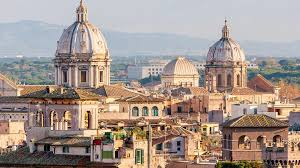

Eternal Rome: Domes Suspended in Time
This isn't just a skyline; it's a deep dive into the History of Italy seen from above. The feeling of gazing upon the endless domes and the ochre-colored rooftops of Rome is truly indescribable. From a secret vantage point, I watched the morning sun embrace the city, highlighting the grandeur of the two prominent twin domes (likely near Piazza del Popolo or similar churches) that dominate the frame. Every terracotta roof, every hidden terrace, and every ancient tower you see is a fragment of life that pulses through this eternal city. The air, crisp and bright, allows you to glimpse the Lazio hills in the background, reminding you that antiquity is never far away. If you love history, art, and architecture layered one upon the other, you must come to Rome and find your own hidden paradise. Don't just visit the Colosseum; go high up. Let this vista amaze you: it's the beating heart of the ancient empire, an invitation to get lost in its timeless streets.
Torna a gli articoli